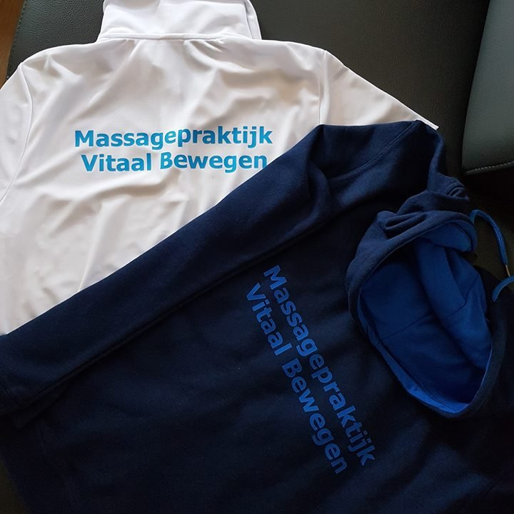

Sportmassage
Voor de wedstrijd om de spieren op te warmen, of erna om sneller te herstellen.
vanaf € 27,5030, 45 of 60 minMeer info
Bij Marca Nelen, sportmasseur en massagetherapeut. Elke behandeling begint met een kort gesprek, zodat de massage past bij wat u nodig hebt: herstel na het sporten, minder klachten of gewoon even ontspannen.
Voor sporters, bij klachten of om te ontspannen. Klik op een massage voor meer uitleg.
Voor de wedstrijd om de spieren op te warmen, of erna om sneller te herstellen.
Bij specifieke klachten kijk ik naast de spieren ook naar de gewrichten en werk ik vanuit de wervelkolom.
Een massage over het hele lichaam, met onder meer bamboemassage, Indiase hoofdmassage en lomi-lomi.
Een zachte, rustige techniek die een teveel aan vocht helpt afvoeren.
Een rustige massage van voeten en onderbenen via drukpunten. Alleen uw voeten en onderbenen gaan bloot.
Over de kleding heen, op een speciale stoel. Ook voor bedrijven, evenementen en instellingen.
Geen standaardmassage: eerst kijk ik wat u nodig hebt.
Ik vraag naar uw gezondheid, eventuele klachten en wat u van de massage verwacht.
Ik kijk naar uw houding en lichaam, zo nodig met een onderzoek van spieren of gewrichten.
Met die gegevens stel ik een plan op dat past bij uw doel en wensen.
Van een half uur tot anderhalf uur, in overleg. Na afloop krijgt u een glas water.
Hoe lang de massage duurt, spreken we samen af.

Ik ben Marca Nelen en woon in Etten-Leur. Ik ben altijd veel met sport bezig geweest, en daardoor ook geboeid geraakt door het menselijk lichaam. In 2017 ben ik een cursus sportmassage gaan volgen, en sindsdien laat het masseren me niet meer los.
Inmiddels ben ik naast sportmasseur ook massagetherapeut, zodat ik ook klachten kan behandelen. Ik school me regelmatig bij, zodat ik voor ieder wat wils kan bieden. Met het BMS massageteam sta ik geregeld te masseren op (sport)evenementen.
Afspraken maak ik in onderling overleg, het liefst via WhatsApp. Een bericht via het formulier kan ook.
Laat weten welke massage u zoekt en wanneer het u uitkomt, dan spreken we samen een moment af.